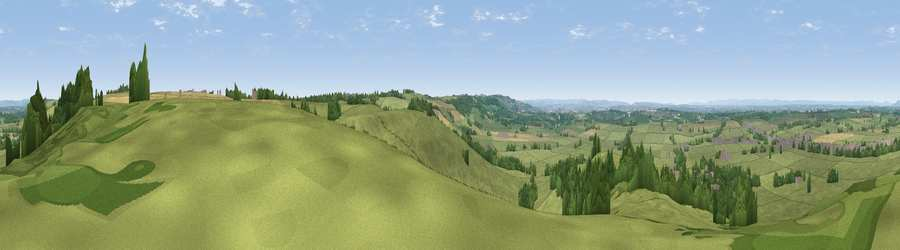

Viewpoint near Hinton
#14859 in England · top 18% of its area beats it · near Hinton · path 68 mWhere it is
The exact computed spot (ST 74025 76675). Click the marker for map links.
Public access: the nearest public right of way is about 68 m away — the final stretch may cross private land. Computed from Natural England's CRoW access layer and OpenStreetMap rights of way — not the legal definitive map. Always verify locally.
The view, rendered

A 360° render of this exact spot computed from the terrain model, tree cover and land cover — summer colours, afternoon light, calibrated against photographs of famous viewpoints. Real trees, hedges and buildings will differ in detail.
The panorama
Grey silhouette: terrain skyline in each direction (720 bearings, Earth curvature and refraction included). Dashed green: skyline with trees (+15 m) and buildings (+8 m) as obstacles. Blue strip: how far the ground is visible on each bearing.
Where the view opens
Wedge length = distance to the farthest visible ground on that bearing (vegetation-aware). Rings at 10, 25 and 50 km.
What fills the view
78% grassland · 12% woodland · 7% cropland · 2% built-up
Angular shares of the visible panorama (visual magnitude), not map area. Landscape diversity 0.32 (0–1 Shannon).
Key numbers
More beautiful places nearby
The staircase of upgrades: each row has a higher view potential than everything closer. Driving times are estimates from straight-line distance, calibrated against real road routing — check an actual route before setting out.
| Place | Direction | Drive | Score |
|---|---|---|---|
| Viewpoint near Hinton | NE · 1 km | ~4 min | 65.8 |
| Hanging Hill | SSW · 7 km | ~15 min | 76.4 |
| Viewpoint near Stinchcombe | N · 21 km | ~36 min | 80.5 |
| Nottingham Hill | NNE · 57 km | ~79 min | 80.9 |
| Garway Hill | NNW · 57 km | ~79 min | 84.6 |
| Millennium Hill | N · 63 km | ~86 min | 86.9 |
| Worcestershire Beacon | N · 69 km | ~92 min | 87.1 |
| Viewpoint near West Quantoxhead | WSW · 70 km | ~94 min | 87.9 |
51.48842, -2.37550 · source: screening · position refined by local search. Computed location — check access rights before visiting.